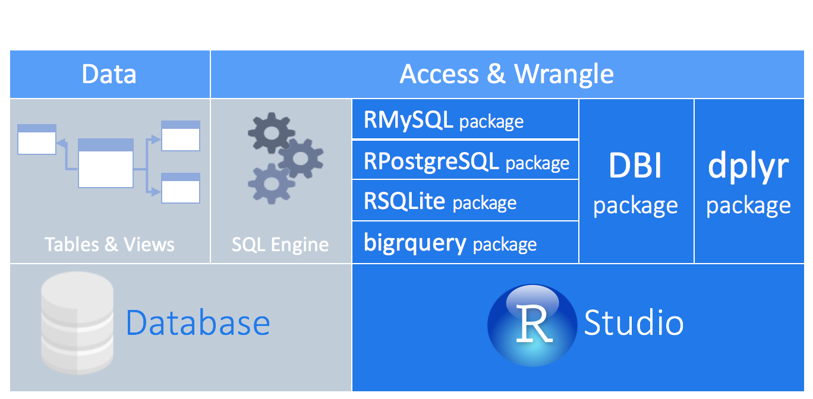
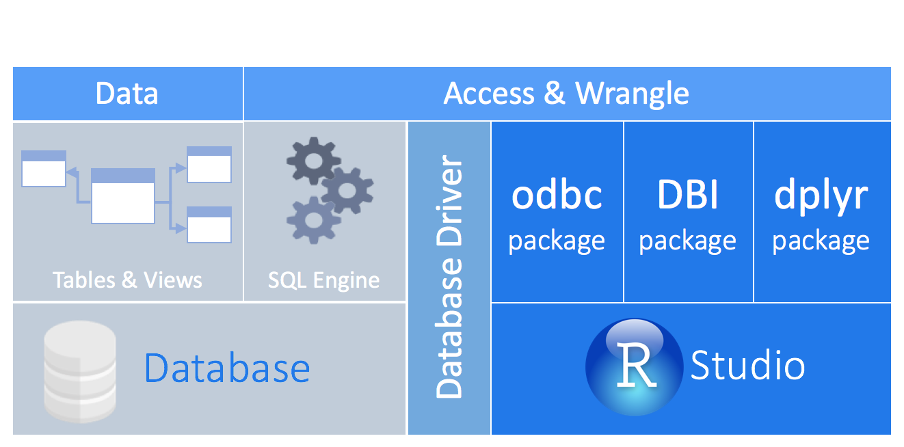
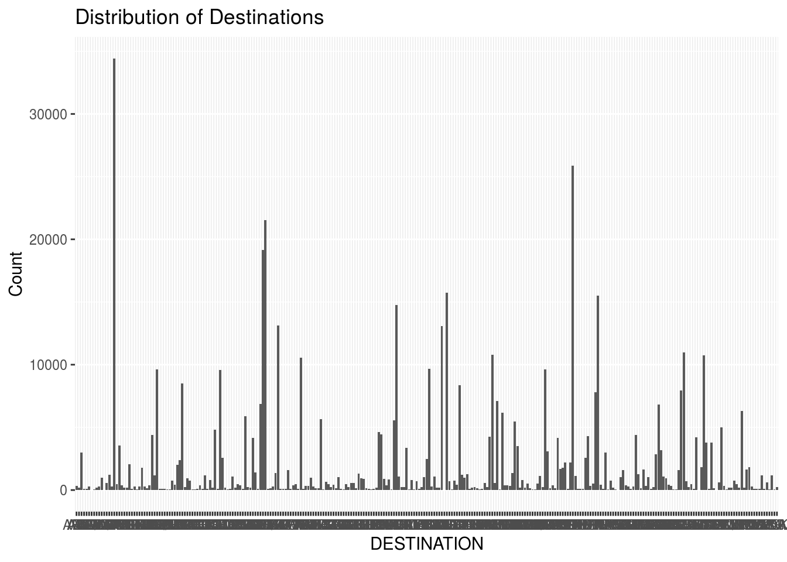

Chapter 6 Beyond the limits: Working with databases in R
Chapter objectives:
- Overview of the types of databases.
- Connect to various database in R
- Read & write data in the database
- Run a query against a database table in R
- Modeling data with modeldb & tidypredict
- Visualize data with dbplot.
- Handling credentials
6.1 Overview of the types of databases.
Google defines database as “a structured set of data held in a computer, especially one that is accessible in various ways.” At its most basic, a database is just a way of storing and organizing information. Ideally it is organized in such a way that it can be easily accessed, managed, and updated.
SQL stands for Structured Query language, pronounced as “S-Q-L” or sometimes as “See-Quel”. SQL is the standard language for dealing with Relational Databases. SQL can be used to insert, search, update and delete database records. SQL can do lots of other operations including optimizing and maintenance of databases. Relational databases like MySQL Database, Oracle, Ms SQL server, Sybase, etc uses SQL.
NoSQL is an upcoming category of Database Management Systems. Its main characteristic is its non-adherence to Relational Database Concepts. NOSQL means “Not only SQL”.
6.1.1 Database Interface
A database management system (DBMS) interface is a user interface which allows for the ability to input queries to a database without using the query language itself. R needs an interface to connect to any database.
There are many interfaces that you may use. A short description of each is given before the reader is given the practical application of these interfaces:
- DBI package. This is the most common and advisable interaface. it uses the native database driver implemented in database package (e.g. RPostgresSQL). Please check the list of known database packages. Connecting to a database with a method that supports the DBI package provides the following advantages:
- A consistent set of functions that work across all connections
- Makes using dplyr as a front-end possible
This article is geared toward those who need to connect to an existing database using an ODBC driver. An ODBC driver uses the Open Database Connectivity (ODBC) interface by Microsoft that allows applications to access data in database management systems (DBMS) using SQL as a standard for accessing the data.
Most open source data bases will sufficiently use the DBI package without extra drivers to connect. The reader is encouraged to read more for an update of the various open source databases.

Tips and summary:
-
If there is a need to connect to several databases in one or several R projects, then it would be preferable to use ODBC for all connections because it increases consistency.
-
For new projects, if using ODBC is still not a viable option, then using an R package that implements a DBI back-end for the JDBC connection will be advisable, like RJDBC. There are other packages that implement both a DBI back-end for a JDBC connection and a dplyr translation, such as implyr for Impala connections.
- ODBC as implemented in odbc package. This provides a DBI-compliant interface to Open Database Connectivity (ODBC) drivers. This allows for an efficient, easy to setup connection to any database with ODBC drivers available.
Most commercial databases, like Oracle and Microsoft SQL Server, offer ODBC drivers that allow you to connect your tool to the database. Even though there are R packages that allow you to use ODBC drivers, the connection will most likely not be compatible with DBI. The new odbc package solves that problem by providing a DBI backend to any ODBC driver connection.
Developers can If create personalised packages that connects DBI to a database, please review the article DBI Backend.

- JDBC. This provides a DBI interface using JDBC as a back-end. The only requirement is working Java and a JDBC driver for the database engine to be accessed.
6.2 Connecting and Exploring
The first step is to connect to the database and explore the database, list the tables present and the fields/columns in those tables. We will illustrate this by connecting to a MySQL database hosted on AWS and learn how to specify the host, port, username, password etc.
To connect to the database, we will use dbConnect() from the DBI package which defines a common interface between R and database management systems. Please check the step by step on the reading of data into R.
In the example we use the RMySQL package as a database interface and ‘MySQL’ Driver for R.
library(DBI)
library(dbplyr)
library(dplyr)
library(dbplot)
library(ggplot2)
library(modeldb)
library(tidypredict)
library(config)
library(RMySQL)
library(odbc)
cn <- dbConnect(drv= RMySQL::MySQL(),
username = Sys.getenv("userid"),
password = Sys.getenv("pwd"),
host = "healthmate.c080qh65xpeg.us-west-2.rds.amazonaws.com",
port = 3306,
dbname = "healthmatedb")After connecting to teh database, you may wish to explore a few propoerties of the connection:
- Connection Summary
## Understand the connection
#summary(cn)
#dbGetInfo(cn)- List Tables
#dbListResults(cn)
#dbListTables(cn)- List fields in a table
#DBI::dbListFields(cn, "airline")6.3 Read, write and modify database
- Read data
#read entire table - If the data is bigger than the available RAM then the data will not load.
#data<-dbReadTable(cn, "airline")
## read few rows
data<- DBI::dbGetQuery(cn, "select * from airline limit 10")
# Read Data in Batches
#query <- DBI::dbSendQuery(cn, 'select * from airline')
#batch1<- DBI::dbFetch(query, n = 10)
#batch2<- DBI::dbFetch(query, n = 10)
#query # To see the summary of the querry
#DBI::dbHasCompleted(query) #Query Status
#DBI::dbGetInfo(query) #Query Info
#DBI::dbGetStatement(query)#Latest Query
#DBI::dbGetRowCount(query)#Rows Fetched
#DBI::dbColumnInfo(query) # Column Info, returns a dataframe
#DBI::dbClearResult(query) #Clear Results
#dbWriteTable(cn, "adjudicateddata", as.data.frame(data),overwrite=FALSE, append=TRUE, row.names = FALSE)- Write data into database
#check if a table exists
#DBI::dbExistsTable(cn, "airline")
#Create Table
#DBI::dbWriteTable(cn, "name of the table in database", name of the dataset used to create the table in the databas)
#Overwrite Table
#DBI::dbWriteTable(cn, "trial_db", trial2_data, overwrite = TRUE)
#append data to a table
#DBI::dbWriteTable(cn, "trial_db", trial3_data, append = TRUE)- Modify database
# Insert Rows
#DBI::dbExecute(cn,"INSERT into trial_db (x, y) VALUES (32, 'c')")
#DBI::dbSendStatement(cn,"INSERT into trial_db (x, y) VALUES (32, 'c')")
# Remove Table
#DBI::dbRemoveTable(cn, "airline")6.4 Database Queries With R
There are many ways to query data with R. This article shows you three of the most common ways:
- Using DBI
You can query your data with DBI by using the dbGetQuery() function. Simply paste your SQL code into the R function as a quoted string. This method is sometimes referred to as pass through SQL code, and is probably the simplest way to query your data. Care should be used to escape your quotes as needed. For example, ‘yes’ is written as 'yes'.
This requires a proper understanding MySQL querry landuage.
#res <- dbSendQuery(cn, "SELECT * FROM icd ORDER BY Code")- Using dplyr syntax
the preferred way is to write your code in dplyr syntax, and dplyr will translate your code into SQL. There are several benefits to writing queries in dplyr syntax: you can keep the same consistent language both for R objects and database tables, no knowledge of SQL or the specific SQL variant is required, and you can take advantage of the fact that dplyr uses lazy evaluation. dplyr syntax is easy to read, but you can always inspect the SQL translation with the show_query() function.
airline2 <- dplyr::tbl(cn, "airline")
summary_DEST <- airline2 %>%
group_by(DEST) %>%
summarize(mean = mean(DEP_DELAY, na.rm = TRUE),
std_dev = sd(DEP_DELAY, na.rm = TRUE))
dplyr::show_query(summary_DEST)## <SQL>
## SELECT `DEST`, AVG(`DEP_DELAY`) AS `mean`, STDDEV_SAMP(`DEP_DELAY`) AS `std_dev`
## FROM `airline`
## GROUP BY `DEST`6.5 modeling data with modeldb & tidypredict
The modeldb package fits models inside database by using dplyr and dbplyr for SQL translation of the algorithms and currently supports linear regression and k-means clustering.
library(modeldb)
airline2 %>%
dplyr::select(DEP_DELAY_NEW, ARR_DELAY_NEW) %>%
modeldb::linear_regression_db(DEP_DELAY_NEW)## # A tibble: 1 x 2
## `(Intercept)` ARR_DELAY_NEW
## <dbl> <dbl>
## 1 -0.237 0.924The main goal of tidypredict is to enable running predictions inside databases. It reads the model, extracts the components needed to calculate the prediction, and then creates an R formula that can be translated into SQL. In other words, it is able to parse a model.
library(tidypredict)
model <- lm(DEP_DELAY_NEW ~ ARR_DELAY_NEW, data = airline2)
data<-airline2 %>%
tidypredict::tidypredict_to_column(model) %>%
dplyr::select(DEP_DELAY_NEW, fit)Visualizing data in databases
The dbplot package leverages dplyr to process the underlying data computations of a plot inside a database. It uses ggplot2 to generate the following plots:
- Histogram
- Raster
- Bar Plot
- Line plot
- Boxplot
airline2 %>%
dbplot::dbplot_bar(DEST) +
ggplot2::xlab("DESTINATION") +
ggplot2::ylab("Count") +
ggplot2::ggtitle("Distribution of Destinations")
Handling Credentials
In handling database credentials is one of the most important aspect. In this section, we will look at the different options for securely storing and accessing credentials.
- rstudioapi
To achieve this we can prompt the user to enter the database credentials using RStudio IDE. askForPassword() will show a popup box that masks what is typed.
#db_con <- DBI::dbConnect(drv = RMySQL::MySQL(),
# username = rstudioapi::askForPassword("Database Username"),
# password = rstudioapi::askForPassword("Database Password"),
# host = "healthmate.c080qh65xpeg.us-west-2.rds.amazonaws.com",
# port = 3306,
# dbname = "healthmatedb")- .Renviron
In the .Renviron file we can define the credentials as shown below:
userid = "username" pwd = "password"
The credentials can then be retrieved using Sys.getenv() as shown in the below example:
#db_con <- DBI::dbConnect(drv = RMySQL::MySQL(),
# username = Sys.getenv("db_uid"),
# password = Sys.getenv("db_pwd"),
# host = "healthmate.c080qh65xpeg.us-west-2.rds.amazonaws.com",
# port = 3306,
# dbname = "healthmatedb")